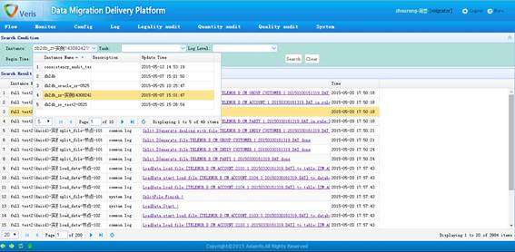

OutDataBase业务参数配置页面
功能描述：
OutDataBase控件提供将源数据库表中的指定数据导出到指定的目标数据库表中得功能。一条完整的OutDataBase控件业务参数包括待导出源数据表、待导出源表连接串、数据筛选条件（可为空）、导出到的目标数据表、导出到的目标数据表连接串。
其中，待导出源数据表支持正则表达式和变量的书写方式；待导出源表连接串和导出到的目标数据表连接串的写法请参照数据库连接串格式；数据筛选条件即SQL查询语句中的where条件，为空时则表示导出表中的所有数据；导出到的目标数据表如果为空则表示目标表名称与源表名称一致，否则必须是表名称的完整描述，不支持任何表达式。